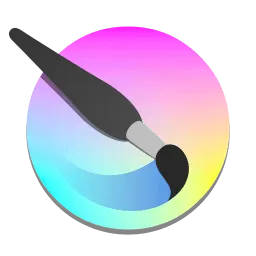
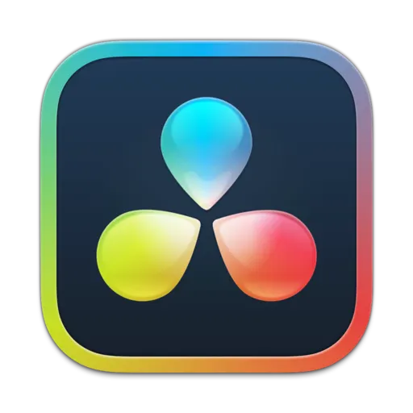
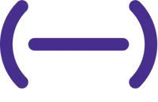

Krita
A free to use and open source application for painting. Best used with a drawing tablet. For primarily digital art and 2D animation.

DaVinci Resolve
A video editor with an extremely powerful free to use version. Its industry level tools are more than capable for personal use, although you need quite the hefty workstation!

Soundtrap
A free online digital audio workstation that is great for collaborating with other musicians. Consider using it before investing into a more capable but expensive DAW.